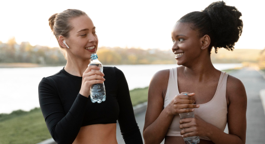

<div class="quote-container">
  <ul class="quote-list">
    <li class="quote-item quote-text-item">
      <div class="quote-icon-wrapper">
        <svg class="quote-item-icon" width="18" height="18">
          <use href="../images/quote/icons.svg#icon-run-man"></use>
        </svg>
      </div>

      <div class="quote-main-info">
        <h3 class="quote-title">Quote of the day</h3>
        <div class="quote-icon">
          <svg class="quote-item-icon quote-icon" width="20" height="20">
            <use href="../images/quote/icons.svg#icon-quote"></use>
          </svg>
        </div>

        <p class="quote-title js-qofd">
          A lot of times I find that people who are blessed with the most talent
          don't ever develop that attitude, and the ones who aren't blessed in
          that way are the most competitive and have the biggest heart.
        </p>
        <p class="quote-author">Tom Brady</p>
      </div>
    </li>
    <li class="quote-item quote-img-item">
      <picture>
        <source
          media="(min-width: 320px)"
          srcset="
            ../images/quote/img-1@x1.webp 1x,
            ../images/quote/img-1@x2.webp 2x
          "
          type="image/webp"
        />
        <source
          media="(min-width: 320px)"
          srcset="
            ../images/quote/img-1@x1.png 1x,
            ../images/quote/img-1@x2.png 2x
          "
          type="image/png"
        />
        
      </picture>
    </li>
    <li class="quote-item quote-text-item">
      <div class="quote-icon-wrapper icon-wrap-dark">
        <svg class="quote-item-icon" width="16" height="12">
          <use href="../images/quote/icons.svg#icon-dumbbells"></use>
        </svg>
      </div>
      <div class="quote-main-info">
        <h3 class="news-title">110 min</h3>
        <p class="news-description">Daily norm of sports</p>
        <p class="news-text multiline-truncated">
          The World Health Organization recommends at least 150 minutes of
          moderate-intensity aerobic physical activity throughout the week for
          adults aged 18-64. However, what happens if we adjust that number to
          110 minutes every day? While it might seem like a high number to hit,
          dedicating 110 minutes daily to sporting activities may offer
          unparalleled benefits to physical health, mental well-being, and
          overall quality of life.
        </p>
      </div>
    </li>
  </ul>
</div>
